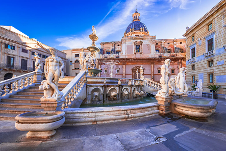
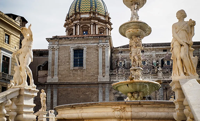
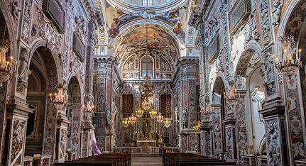
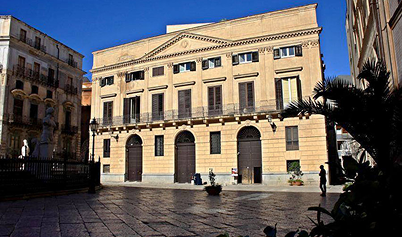

Il fulcro architettonico
La piazza è organizzata con una forma rettangolare e l’elemento centrale circolare ossia la fontana che rende il tutto qualcosa di geometrico ma lineare ed equilibrato.




La fontana Pretoria
La fontana fu realizzata nel 1554 dallo scultore Francesco Camilliani. Ha un impianto elittico a tre livelli; le quattro vasche con gruppi statuarie, rappresentano i fiumi palermitani. Le statue esposte rappresentano divinità mitologiche, mostri, animali, delfini, arpie e sirene. Le figure nude vengono ribattezzate come “Piazza delle Vergogne”.

Chiesa di Santa Caterina D’Alessandria
La Chiesa di Santa Caterina D’Alessandria è un complesso monastico barocco, costruito nel XIV secolo e ampliato successivamente. Questo include un chiostro con maioliche, le terrazze offrono viste spettacolari sul centro.

Palazzo Bonocore
Il Palazzo Bonocore è uno degli esempi più rappresentativi dell’architettura civile nobiliare tra Rinascimento e Barocco. All’interno, si conservano affreschi e pavimentazioni d’epoca, gli ambienti sono stati adattati per ospitare installazioni multimediali.
Eventi
La piazza viene utilizzata per iniziative come concerti all’aperto, spettacoli teatrali, festival, riprese televisive o artistiche.